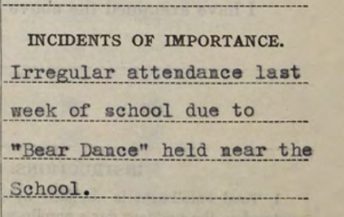

These records include student enrollment and attendance reports, correspondence about employees, school schedules and more. They were obtained from the National Archives at Denver and Washington, D.C., by The Salt Lake Tribune.
School employees, 1889, 1902, 1903
Letters and reports about employees at Uintah and Ouray Boarding Schools
Go to index | Go to document
School employees, 1902, 1903
Letters about employees at Uintah and Ouray Boarding Schools, showing high turnover
Go to index | Go to document
Indian students in public schools, 1922
These are reports with lists of Ute students who attending Whiterocks, Dragon, Alterra, Randlett, Bennett, Duschesne River, Lapoint and Fort Duchesne public schools in periods ending in March and May 1922.
Go to index | Go to document
School census, 1934-1935
This document shows where Ute students were attending school in the 1934-35 school year. Some attended the Uintah Boarding School, some attended the day school there, and others attended various public schools. The index includes the names of parents.
Go to index | Go to document
Uintah Boarding School calendars, 1930s
These are calendars and schedules for the 1930-31 school year, the 1932-33 school year, and a special report created by Girls’ Adviser Grace E. Shively for the 1935-36 school year, which includes photos and a more personal look at the girl’s lives.
Read a story about these calendars — which includes an index at the end to the 1935-36 Adviser’s Report — here: Run on schedule: Inside the Uintah Boarding School in the 1930s
Download the 1930-31 calendar.
Download the 1932-33 calendar.
Download the 1935-36 Adviser’s Report.

School census of Indian children, 1933-1934
This document shows where Ute students were attending school in the 1933-34 school year. Some attended the
Uintah Boarding School, some attended the day school there, and others attended various public schools.
Go to index | Go to document
Uintah Boarding School monthly reports, September 1933-June 1934
In these reports, the school noted changes in attendance and significant events.
Go to index | Go to document
Uintah Boarding School list of students, December 1933
This document includes five pages of student names who were attending the Uintah Boarding School and one page
listing students who had left.
Go to document>
Uintah Boarding School list of students, September 1934
This document lists 16 boys and 21 girls who were attending the school.
Go to document
Uintah Boarding School list of students, 1934-1935
This two-page document (the first page has the years mislabeled) lists 41 girls and 28 boys who attended the
school during the year.
Go to document
Uintah Boarding School Roll, 1935-1936
This document includes lists of students by gender, each followed by individual records showing the student’s
name, age, grade, parents and attendance.
Go to index | Go to document
Boys at Uintah Boarding School, 1936-1937
This document includes a list of boys at the school, followed by individual records showing each student’s name,
age, grade, parents and attendance.
Go to the index | Go to the document
Girls at Uintah Boarding School, 1936-1937
This document includes a list of girls at the school, followed by individual records showing each student’s
name, age, grade, parents and attendance.
Go to the index | Go to the document
Uintah Boarding School, 1939 and 1940
This document includes lists of students by gender, each followed by individual records showing the student’s
name, age, grade, parents and attendance.
Go to index | Go to document
Indian students in public schools, 1949 and 1950
This documents lists Ute students who were attending various public schools.
Go to the document
How money was spent at the Uintah Boarding School, 1949-1950
This document is 171 pages of receipts and other documents that show what was purchased for the Uintah School at
Whiterocks — from hair pins to bedding plants, paper plates to rubber balls, Christmas decorations to clippers
for the boys’ dormitory — and thousands on ordering movies to show for the community.
Go to the document